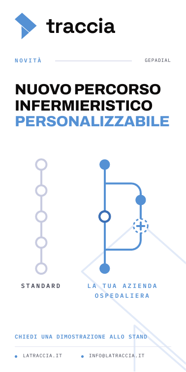

Totem esterni
Due totem da 100 × 200 cm · tre varianti tra cui scegliere
Tre varianti per due totem

Il microfono AI, hardware custom, e accanto i due usi: ambulatorio e rilevazioni a bordo letto.

Istituzionale: il marchio composto di punti, una mappa di dati clinici; certificazioni e contatti.

Il percorso standard accanto a quello costruito sull'azienda ospedaliera, con tappe proprie.